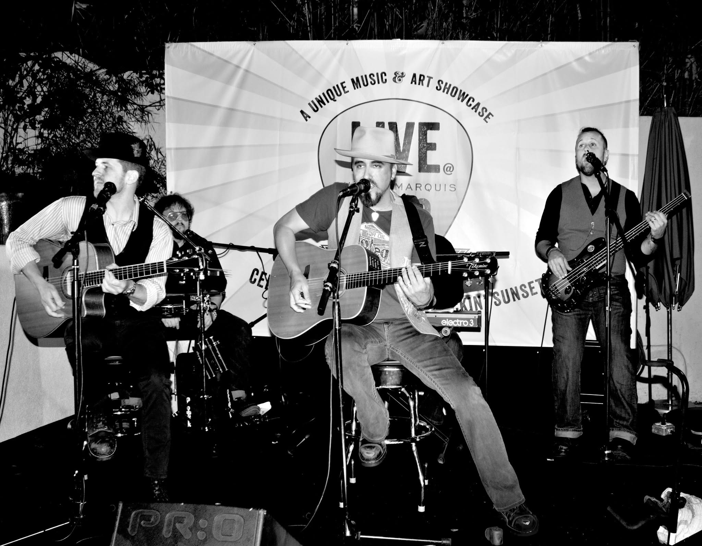
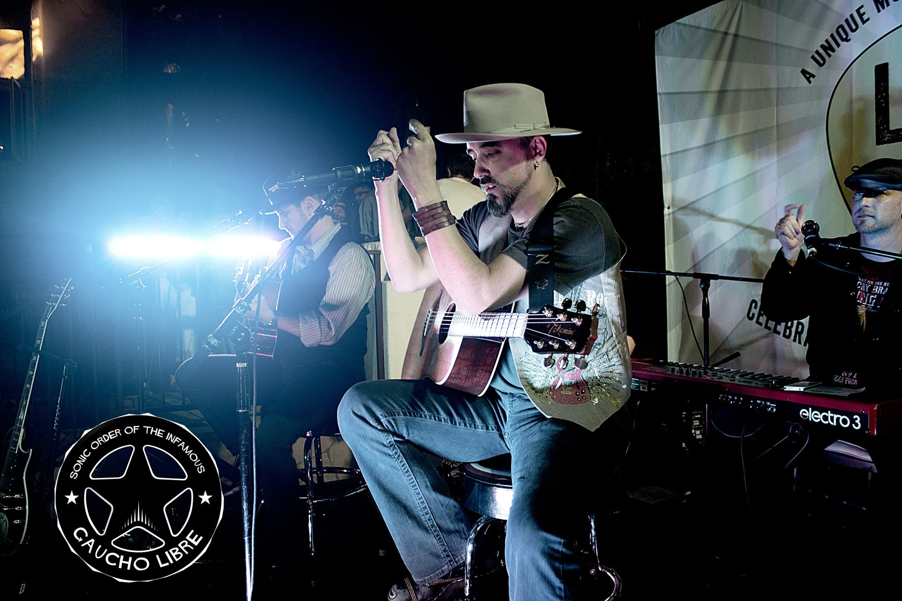
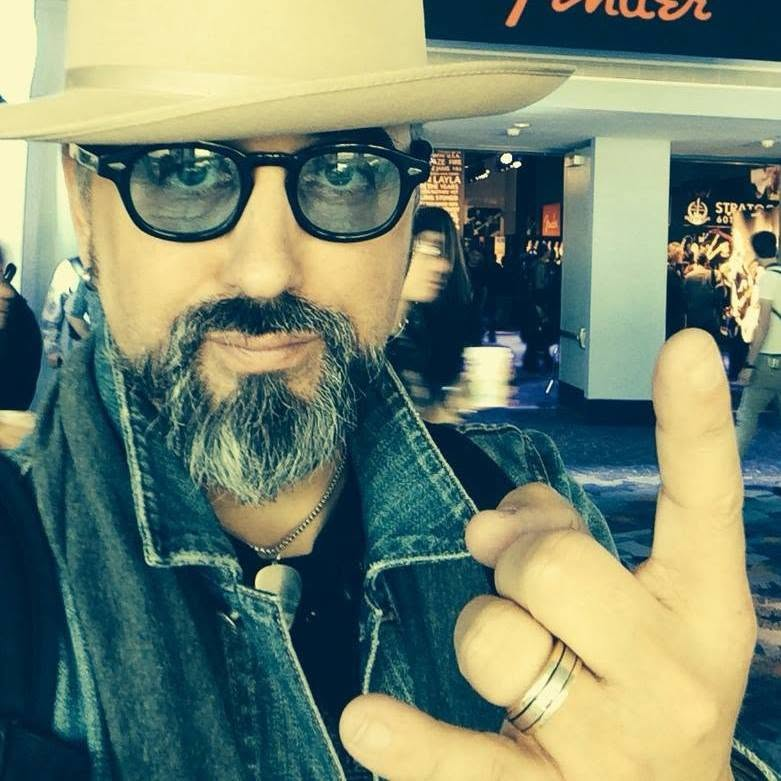
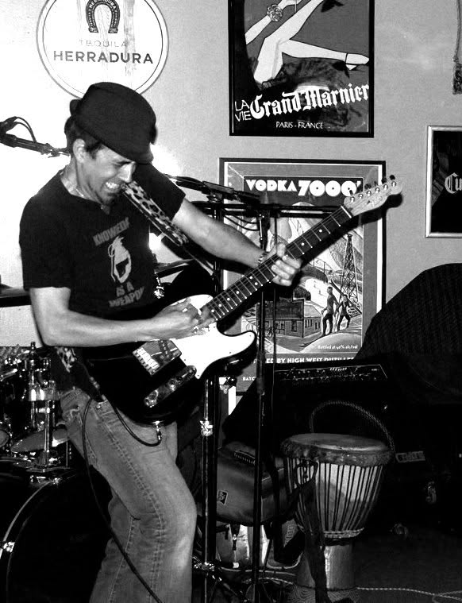
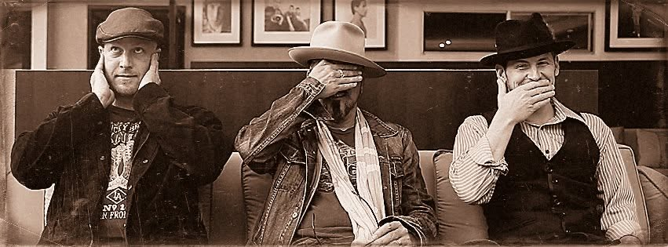
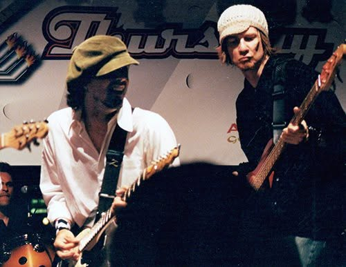
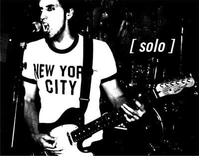
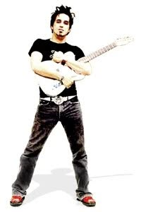

Player
Decades of guitar, songwriting, band life, stage time, and music-first instincts.
Creative direction, brand systems, web work, and music industry fluency from someone who has been on both sides of the stage.

I am not coming at Fender as a tourist. I have played in bands, written songs, hauled gear, built sets, tuned in bad lighting, chased tone, played to empty rooms, played to full ones, and cared way too much about the way an instrument feels before the first chord even lands.
That matters because the best music brands do not only sell specs. They sell identity, confidence, memory, possibility, and a little bit of beautiful trouble. Fender sits right in the middle of that.


At Agency689, I helped shape Traveler Guitar work across brand, web, campaign, product storytelling, and the kind of messaging that has to speak to real players fast. Musical instrument work asks for a strange mix: technical clarity, emotional pull, retail awareness, and respect for the player who already knows when the marketing is faking it.
That same muscle shows up in entertainment and hospitality brands connected to music culture: Sunset Marquis, Live at Sunset Marquis, artist-facing experiences, and brands built around stages, audiences, and the rituals around performance.
Back in the day, I worked as a web designer at NAMM. Since then, NAMM has been a recurring part of my professional and personal life: show floors, demos, dealer energy, product launches, artist sightings, late nights, loud rooms, and the weird little details that make the music products industry its own ecosystem.
I understand the difference between a brand story built for a player, a retailer, a manufacturer, a press moment, and a community that cares deeply about authenticity. Fender has to move through all of those worlds at once.

Player
Decades of guitar, songwriting, band life, stage time, and music-first instincts.
MI
Traveler Guitar brand, web, campaign, and product storytelling experience.

NAMM
Former NAMM web designer plus years of industry show-floor context.

Brand
Creative direction across identity systems, websites, campaigns, content, and launch materials.




This section is built to hold the personal Fender material: guitars, amps, NAMM photos, old booth shots, favorite instruments, and the bits of proof that make the fandom feel lived-in instead of claimed.
For now, the blanks are intentional placeholders so the page can keep moving while the real Fender images are gathered.
Fender guitars I have owned, played, chased, or regretted selling.
NAMM / Fender booth photos, past and present.
Personal amp, pedal, studio, and writing-room artifacts.
A musician's empathy, a creative director's discipline, a web designer's hands-on fluency, and a real understanding of the music industry audience: players, dealers, artists, collectors, beginners, obsessives, and the people still standing in front of an amp looking for the sound in their head.